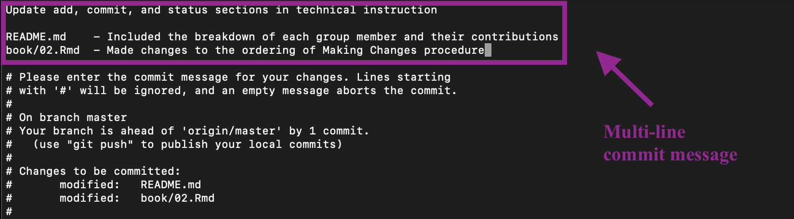

2 Making Changes (Kylee)
When making changes to a repository, generally a combination of git status, git add, and git commit will be used. The high level procedure for making changes is the following:
Make edits to files in the repository.
Check which files have been added/modified/deleted and which files have been staged/unstaged.
Add edited files to the staging area.
Save these changes in a commit.
In order to understand the output of git status, it helps to know how the commands git add and git commit work first.
2.1 git add
The add command allows users to add files to the staging area (Step 3). This essentially lets Git know that you made changes to the file and you would like to save them.
However, using the add command does not actually save the changes yet. That functionality is done by git commit.
2.1.1 Command Line
First, open Terminal and navigate to desired directory:
$ cd ~/cmu/76270/project4/github-instructions/Now you are ready to add files. You can add files in terminal either individually or all at once.
Adding files individually (NOTE: If you include multiple files, they must be separated by a space.) For example, this command will add
README.mdandbook/02.Rmdto the staging area:$ git add README.md book/02.RmdAdding all tracked and untracked files in this repository (new, modified, and deleted)
$ git add -A
Tracked files are files that are included in the remote Git repository. So, Git will be able to track and record any changes made to these files. However, if you create new files locally, these files are untracked. Since you just created them, Git cannot track them since they are not yet in the remote Git repository. You must use the git add command in order to add these files to the remote Git repository so that Git can track them.
2.2 git commit
The commit command actually saves any changes to files you made (Step 4). In conjunction with git add, the commit command will save all files that you have previously added to the staging area. Each commit is a snapshot, or a saved state, of your repository. Commits also require messages or captions to go along with them, usually describing the kinds of changes made.
Commit messages are meant to help you, the user, identify different commits, so you should choose a helpful commit message. This is beneficial if later on you are looking at all of your previous commits and want to see what changes you made in each one. Because these commit messages are so useful, there are two ways to write them.
Before proceeding, make sure that you have run git add to stage all of the changes you want to commit.
2.2.1 Command Line
First, open Terminal and navigate to desired directory:
$ cd ~/cmu/76270/project4/github-instructions/Now you can commit. There are two different ways of making a commit:
One-line commit message
$ git commit -m "Update add, commit, status sections in draft"Multi-line commit message. Note: If you choose to commit your changes this way, Git will enter a
vim-like editor for you to edit the commit message. You should only choose this method if you are comfortable with usingvim.$ git commit

2.3 git status
The status command allows you to display any changes you have made to the directory you are currently working in (Step 2). It details which changes have been staged (using git add), which changes have not, and which files are not being tracked by Git.
Essentially, you will be able to see which files Git will save if you were to commit. This allows you to first, see which files you have changed, and second, confirm all the files you want/don’t want to track.
2.3.1 Workflow
Going back to the high level procedure of how to make changes, here is an example of how to use these commands in conjunction.
Suppose we are working on a repository called github-instructions and we have just made changes to README.md and draft.Rmd, deleted a few image files, and also added new image files.
First, open Terminal and navigate to desired directory:
$ cd ~/cmu/76270/project4/github-instructions/Using git status gives us a summary of the files we have changed, and further git add can move these changes to the staging area to be committed.
Using git status once again will now display an updates summary displayed that the files are now in the staging area. Finally, we can save these changes with a one-line commit message.
And just like that, we have successfully saved changes to our repository!